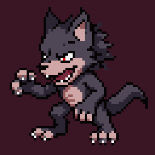
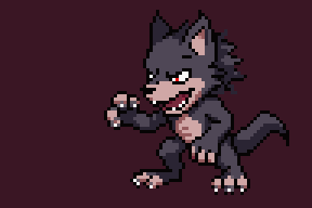
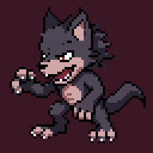
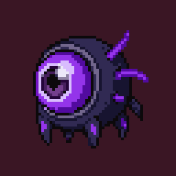
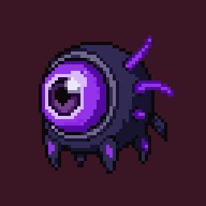
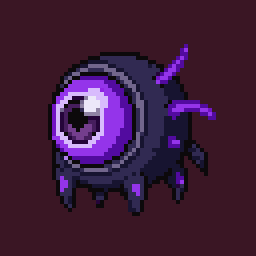

<meta charset="utf-8">
<title>늑대인간 움직임</title>
<link rel="stylesheet" href="https://fonts.googleapis.com/css2?family=Do+Hyeon&family=IBM+Plex+Sans+KR:wght@400;600&display=swap">
<style>
:root { color-scheme: dark; --page: #120c18; --ink: #ece4f2; --muted: #a99bb5; --line: #2f2439; --card: #1d1526; --gold: #ffcf4d; --body: 'IBM Plex Sans KR', system-ui, sans-serif; }
body { background: var(--page); color: var(--ink); font: 15px/1.65 var(--body); }
main { max-width: 1040px; margin: 0 auto; padding-block: 28px 64px; padding-inline: 16px; display: grid; gap: 26px; }
h1, h2 { font-family: 'Do Hyeon', sans-serif; font-weight: 400; margin: 0; } h1 { font-size: 30px; } h2 { font-size: 22px; }
p { margin: 0; max-width: 65ch; } .lede, .note { color: var(--muted); } .note { font-size: 13px; }
section { display: grid; gap: 10px; } .row { display: flex; flex-wrap: wrap; gap: 14px; }
.c { display: grid; gap: 4px; justify-items: center; font-size: 14px; }
.c img { height: 192px; width: auto; max-width: 100%; image-rendering: pixelated; border: 1px solid var(--line); border-radius: 8px; }
.c small { color: var(--muted); font-size: 12px; }
.wrap { overflow-x: auto; border: 1px solid var(--line); border-radius: 6px; background: var(--card); }
table { border-collapse: collapse; width: 100%; min-width: 640px; font-variant-numeric: tabular-nums; font-size: 14px; }
th, td { text-align: left; padding: 7px 10px; border-bottom: 1px solid var(--line); } th { font-size: 12px; color: var(--muted); font-weight: 600; }
tr.new td { color: var(--gold); } tr:last-child td { border-bottom: 0; }
.decide { border: 1px solid var(--gold); border-radius: 6px; padding: 14px 16px; display: grid; gap: 6px; } .decide h2 { color: var(--gold); font-size: 19px; }
ul { margin: 0; padding-left: 20px; display: grid; gap: 4px; }
</style>
<main>
  <header style="display:grid;gap:8px"><h1>새 몬스터 3종 움직임</h1>
  <p class="lede">고르신 시안을 그대로 움직였습니다(다시 만든 것 포함 총 11회). 게임처럼 왼쪽을 보게 뒤집었고, 로컬 게임에 넣어 탑·편성 화면에서 확인했습니다.</p></header>
  <section><h2>늑대인간 — 성 Lv.1, 광란(두 번 할퀴기)</h2><div class="row">
    <div class="c">시안</div>
    <div class="c">대기</div>
    <div class="c">공격<small>뛰어들며 할퀴기 (하얀 손 고침)</small></div>
    <div class="c">쓰러짐</div></div></section>
  <section><h2>역병 버섯 — 성 Lv.2, 치유</h2><div class="row">
    <div class="c">시안</div>
    <div class="c">대기</div>
    <div class="c">치유<small>등불이 초록빛으로 번쩍</small></div>
    <div class="c">쓰러짐<small>시들어 주저앉음</small></div></div></section>
  <section><h2>심연의 눈 — 성 Lv.2, 심연의 응시(용사 전체)</h2><div class="row">
    <div class="c">시안</div>
    <div class="c">대기</div>
    <div class="c">공격<small>빛나며 어둠 파동</small></div>
    <div class="c">쓰러짐</div></div></section>
  <section><h2>능력치 (레벨 1, 확인 필요)</h2>
    <div class="wrap"><table>
      <tr><th>몬스터</th><th>열리는 곳</th><th>체력</th><th>공격</th><th>방어</th><th>속도</th><th>스킬</th></tr>
      <tr><td>슬라임</td><td>성 Lv.1</td><td>120</td><td>11</td><td>8</td><td>2</td><td>도발 (3턴)</td></tr>
      <tr><td>해골병</td><td>성 Lv.1</td><td>80</td><td>20</td><td>4</td><td>4</td><td>관통 (2턴)</td></tr>
      <tr class="new"><td>늑대인간</td><td>성 Lv.1</td><td>85</td><td>16</td><td>4</td><td>5</td><td>두 번 할퀴기 60%씩 (2턴)</td></tr>
      <tr><td>임프</td><td>성 Lv.2</td><td>60</td><td>18</td><td>2</td><td>5</td><td>후열 공격</td></tr>
      <tr class="new"><td>역병 버섯</td><td>성 Lv.2</td><td>95</td><td>8</td><td>5</td><td>3</td><td>가장 다친 아군 체력 25% 회복 (3턴)</td></tr>
      <tr class="new"><td>심연의 눈</td><td>성 Lv.2</td><td>60</td><td>15</td><td>2</td><td>4</td><td>용사 전체 50% (3턴)</td></tr>
      <tr><td>돌 골렘 · 밴시</td><td>성 Lv.4 (지금 Lv.5 · 7)</td><td colspan="5">그대로</td></tr>
    </table></div>
    <p class="note">새끼 용(영혼석 150)의 화염은 전체 60%라, 무료인 심연의 눈은 50%로 약하게 두었습니다.</p></section>
  <section class="decide"><h2>정해 주실 것</h2><ul><li>움직임: 이대로 / 다시 만들 것</li><li>능력치: 이대로 / 고칠 숫자</li></ul></section>
</main>
